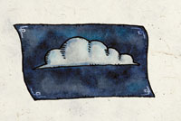

阿卡狄 Akadi（风元素女神）
（左一）
费伦神系 强大神力
别称：大气女士 Lady of Air，风之女士 Lady of the Winds
圣徽：蓝天白云

居住界域：风元素界 Elemental Plane of Air
阵营：绝对中立 N
神职：风元素 Element air，迁徙 movement，速度 speed，飞行生物 flying creatures
信徒：饲育动物者，元素使者（风），游侠，盗贼，水手
牧师阵营：守序中立 LN，混乱中立 CN，中立邪恶 NE
神域：风 Air，幻象 Illusion，旅行 Travel，诡术 Trickery
喜好武器：旋风 A whirlwind（重型链枷 heavy flail）
阿卡狄是基本元素之一－风的具体化身。她是费伦大陆上的四大元素神之一，与其它元素神祇相同，她的信徒数量并不多（在这点上卡署斯是个例外）。她对自己的信徒并不十分重视，为有当凡人们焚烧贵重的熏香，使烟雾随风飘荡以礼敬她时，才较能引起她的注意。她或许会响应凡人的祈求改变风向、稳定风速、提供良好的飞行天候、亦或制造降雨，但绝不会引发或压制风暴－因为那属于塔烙斯（Talos）的职权范围。
阿卡狄的教会分成许多小型的教派，各由一位 最具魅力的信徒领导。所有的教派都各自选择依循「微风之道」（the Whisper，秘密活动）或「狂风之道」（the Roar，公开活动）。绝大多数风之女士牧师的一生，都在倾听风的歌声、于费伦星光的照拂下四处旅行、追寻当下个人的兴趣、并向其它人宣扬阿卡狄的荣光。 有些较偏执奇想的牧师则是执着于各种实用性或机密性的「生体实验」－比如试图培育出速度更快且毛色更加柔顺的猎应或赛犬、或研究兽人究竟强韧到能在猛烈的风暴中支撑多久不死、甚或投注大量心力研究猫用的人工飞行翼。
阿卡狄的牧师在黎明即将到来之前，侧耳倾听风中低语着清晨的讯息，并祈祷以 获得神术。教会中唯一正式的圣日位于「仲夏节」（Midsummer），当天所有的信众都会尽力聚集在沙尔大草原（the Shaar）上的布雷斯卡特（Blaskaltar）遗迹－一处现已几乎湮没在时间与风吹雨打之中的废墟－只因费伦大陆上第一座为人所知的阿卡狄圣坛便坐 落于此。信众们会齐声诵念礼敬过往教会中的诸位英雄，并将过去一年中逝去英雄的名字加进诵念的名单。阿卡狄的牧师常兼职成为元素使者（Elemental Archon）、游侠、或是盗贼。
历史/与众神的关系 History/Relationship：
阿卡狄是四大元素神 祇之一，她似乎超然于时间之上，在漫长的历史中一直未曾改变。她和其它与风元素有关连的神祇－比如艾德莉˙芬里雅（Aerdrie Faenya，翼精灵守护女神）、以及山达柯尔（Shaundakul）－略有往来，但关系也不甚密切。她尽一切力量反抗固执又不肯变动的谷蓝巴。
教义 Dogma：
每 个人都要找出自己的兴趣与目标。一旦你专注的热情，则一切追求灵性成长的机会也随之消逝。在各种活动与场所之间寻找个人的梦想与喜好，随着每一个新个日子 一起成长。当无法获得教会内其它成员的支持时，无须为此担忧，只因所有的妨碍都必定会逐一消失－此外，获得所有人的认同也不是真的如此重要。千万别让自己被拘束或禁锢－那种生活比死亡还不如。
--
资料来源：费伦大陆信仰与神系《Faiths & Pantheons》
译者：一凡